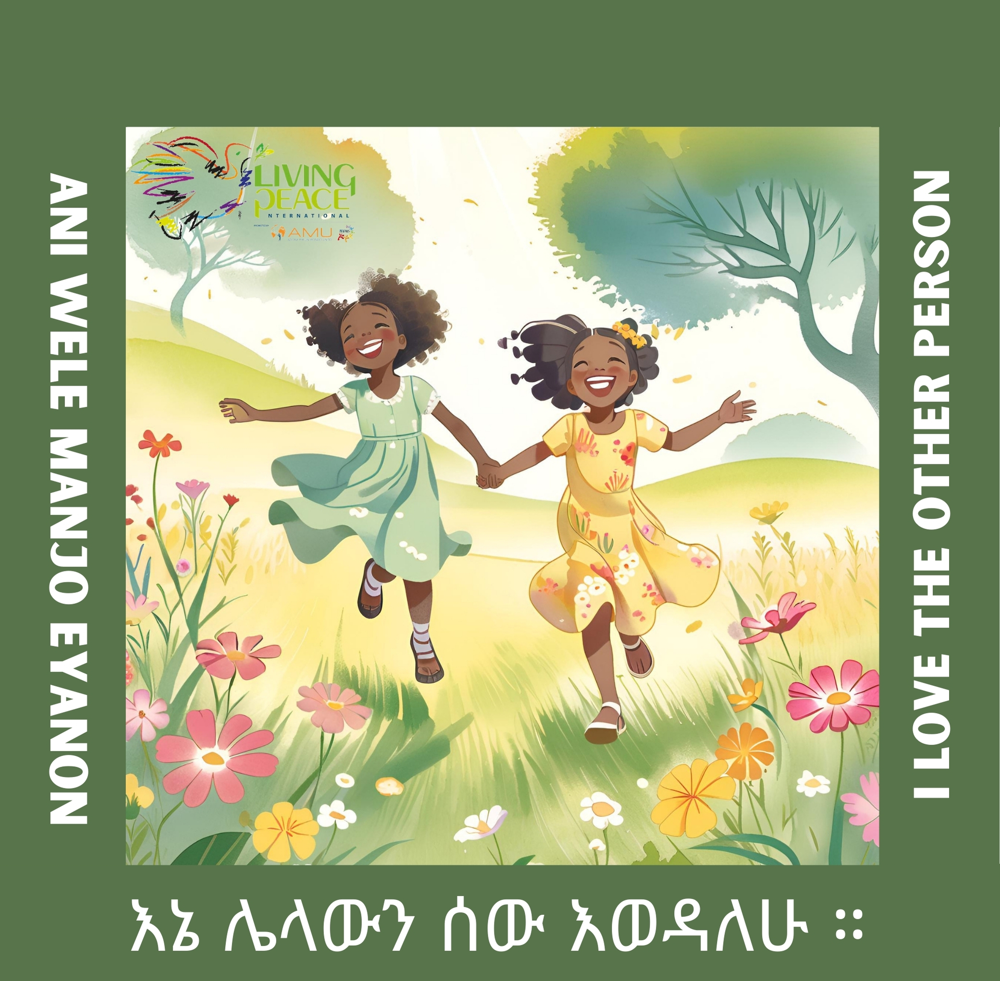
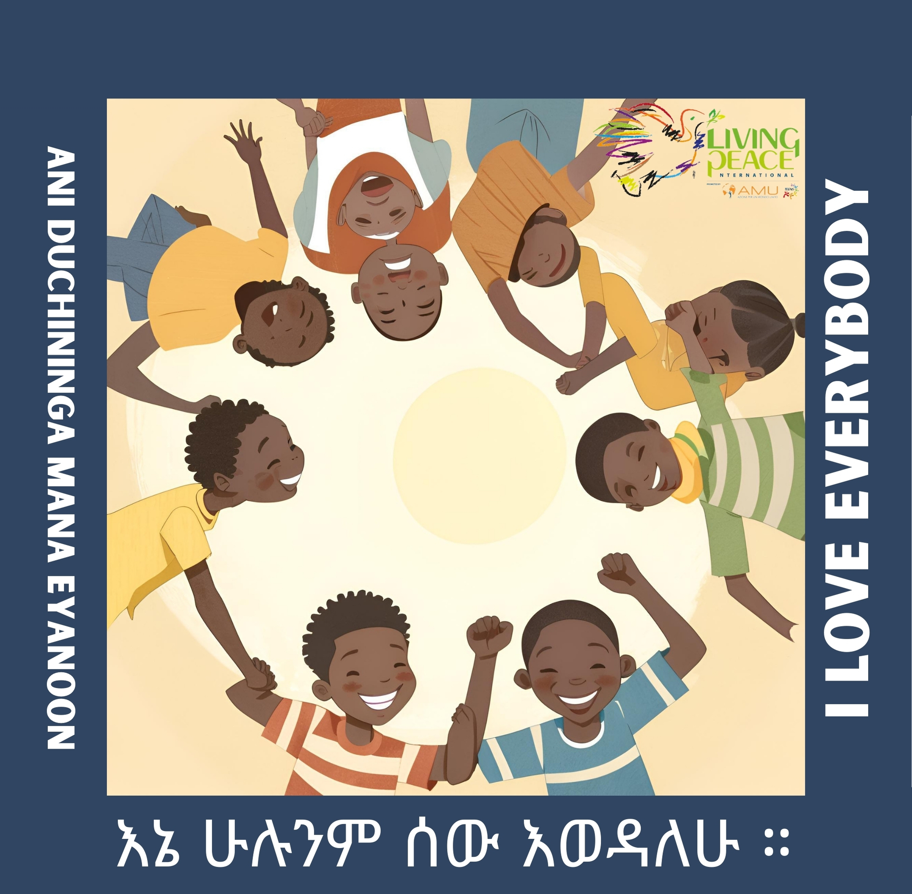
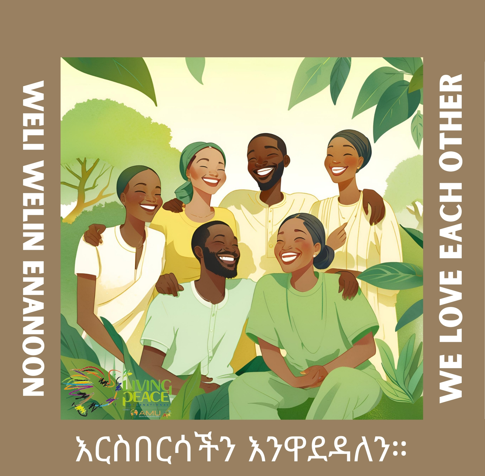
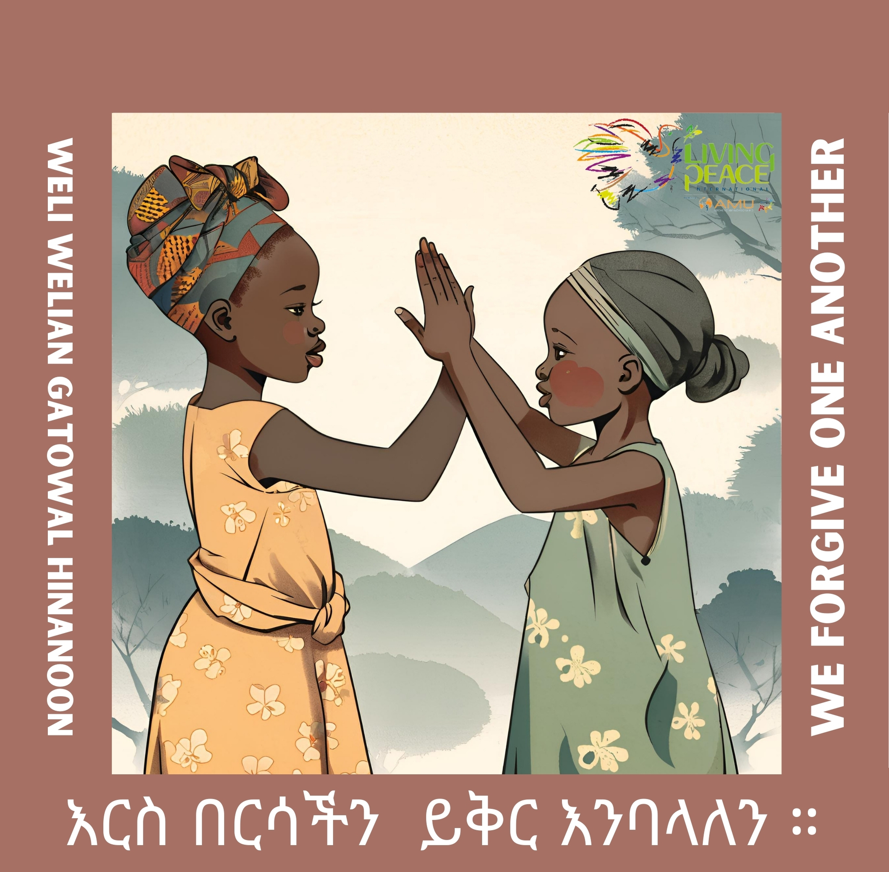
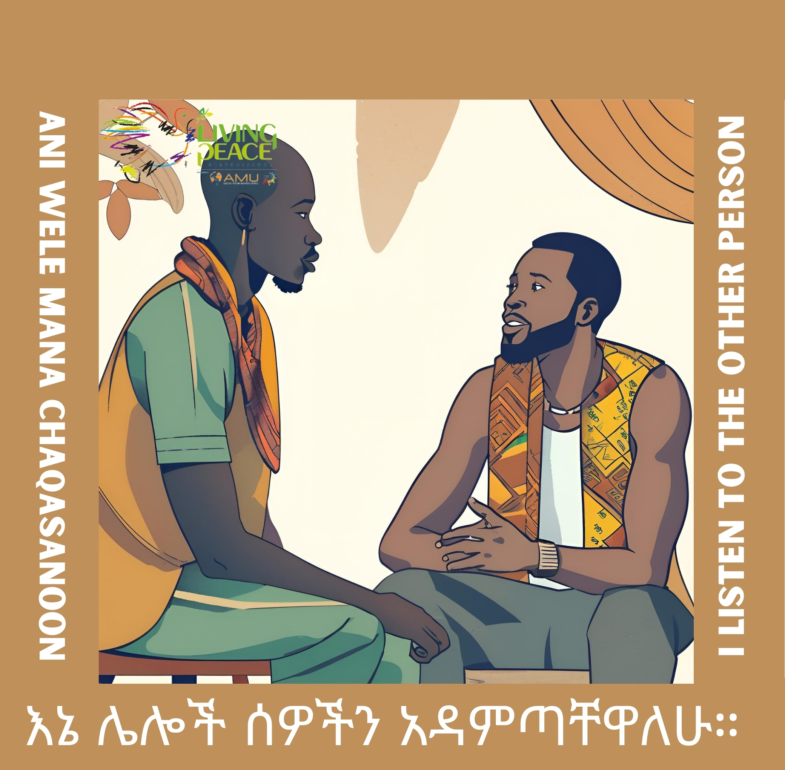
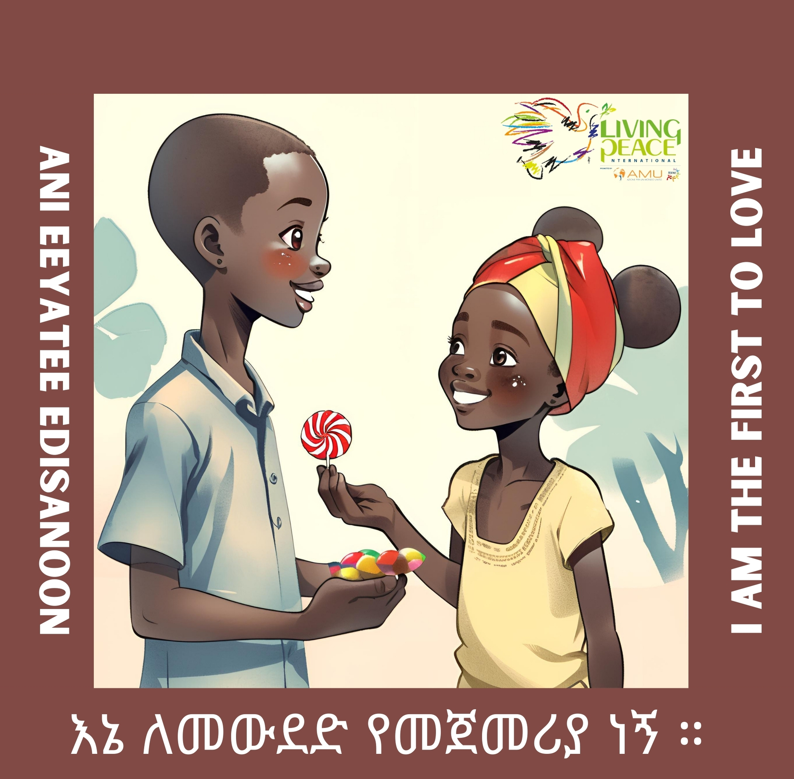

TU ACTITUD DE PAZ
Amo al otro
Mira a la persona concreta que tienes cerca y haz algo bueno por ella.
LA PAZ EN CADA CULTURA
Este dado expresa las seis actitudes de la paz con imágenes inspiradas en la cultura etíope. Las tarjetas te ayudan a vivir la paz desde cada cara.






Mira a la persona concreta que tienes cerca y haz algo bueno por ella.
LAS SEIS CARAS
Pulsa una tarjeta para descubrir cómo vivir cada actitud.
“La paz habla muchos idiomas, pero siempre empieza con un gesto de amor.”
Amar · Escuchar · Perdonar